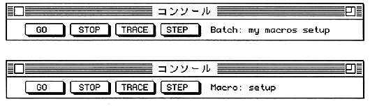
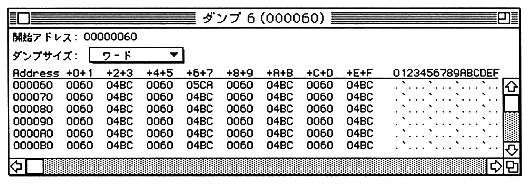

The lower part of the window is an input area where you can cut and paste as you would with normal editing text.
Between the input area and the top button is the part that displays the console command execution results. You can view the backlog using the scroll bar. If there are many backlogs, the oldest ones will disappear.

By clicking “Dump Address”, you can enter the dump start address.
You can select the display size (byte, word, or longword) from the “Dump Size” pop-up menu.
You can edit the memory by clicking the dumped value in the window.